Meet Us
Team
Principal Investigator, PhD, graduate, and undergraduate researchers at CNElab.
Principal Investigator
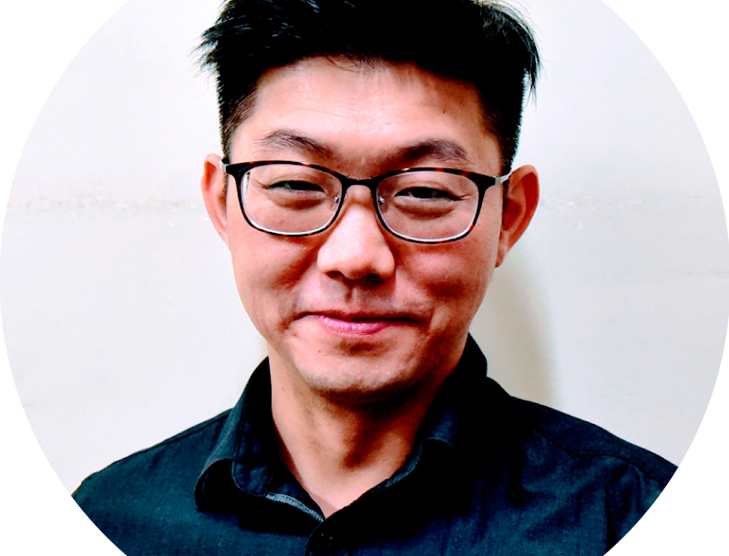
Chun-Hsiang (Michael) Chuang 莊鈞翔
Associate Professor
Department of Industrial Engineering and Engineering Management, College of Engineering, National Tsing Hua University, Taiwan
國立清華大學工業工程與工程管理學系
Experience
Taiwan
- 2023 – now, Secretary, IEEE Systems, Man and Cybernetics (SMC) Society, Taipei Chapter
- 2022 – 2025, Associate Professor, College of Education, National Tsing Hua University, Taiwan 國立清華大學教育學院
- 2021 – 2025, Adjunct Professor, Institute of Information Systems and Applications, College of Electrical Engineering and Computer Science, NTHU, Taiwan 國立清華大學電資院資應所（合聘）
- 2022 – 2025, Deputy Director, Research Center for Education and Mind Sciences, NTHU, Taiwan 國立清華大學教育與心智科學研究中心副主任
- 2020 – 2022, Assistant Professor, College of Education, National Tsing Hua University, Taiwan
- 2021 – 2025, Adjunct Professor, Department of Education and Learning Technology, College of Education, NTHU, Taiwan 國立清華大學教科系（合聘）
- 2021 – 2023, Treasurer, IEEE CIS Taipei Chapter
- 2018 – 2020, Assistant Professor, Department of Computer Science and Engineering, National Taiwan Ocean University, Taiwan
- 2015 – 2017, Assistant Researcher, Department of Electrical and Computer Engineering, National Chiao Tung University, Taiwan
- 2014 – 2015, Postdoctoral Fellow, Brain Research Center, National Chiao Tung University, Taiwan
Australia
- 2018 – 2020, Honorary Associate, Faculty of Engineering and Information Technology, University of Technology Sydney, Australia
- 2016 – 2017, Lecturer (~Assistant Professor), School of Computer Science, Faculty of Engineering and Information Technology, University of Technology Sydney, Australia
Personal Statement
Dr. Chun-Hsiang (Michael) Chuang received his Ph.D. in Electrical and Control Engineering from National Chiao Tung University (NCTU), Taiwan, in 2014. He began his academic career at the Brain Research Center, NCTU, where he was appointed as a Postdoctoral Researcher and subsequently as an Assistant Researcher in April 2014.
From 2016 to 2017, Dr. Chuang served as a Lecturer (equivalent to Assistant Professor) at the University of Technology Sydney (UTS), Australia. He then held the position of Assistant Professor in the Department of Computer Science and Engineering at National Taiwan Ocean University from 2018 to 2020.
In 2020, he joined the College of Education at National Tsing Hua University (NTHU), Taiwan, as an Assistant Professor and was promoted to Associate Professor in 2022. As of 2025, he has transferred to the Department of Industrial Engineering and Engineering Management (IEEM) in the College of Engineering at NTHU. His current research focuses on neuroergonomics, encompassing human performance, cognitive function, and clinical applications, with a particular emphasis on brain-computer interfaces and biomedical signal processing using AI techniques.
Research Focus
Award & Honor
- 2025, 112年度清華-清鏡傑出年輕學者
- 2022, 國立清華大學竹師教育學院學院教學優良教師
- 2020–2025, 國立清華大學「延攬及留住特殊優秀人才彈性薪資獎勵」
- 2020, Outstanding Technical Award & Honorable Mention, VR battle, CGW2020
- 2020–2025, MOST Young Scholar Fellowship: Columbus Program 國科會年輕學者養成哥倫布計畫
- 2019–2022, MOST Project for Excellent Junior Research Investigators 國科會優秀年輕學者研究計畫
- 2014, Outstanding graduate student award, National Chiao Tung University
- 2014, Honorable member, The Phi Tau Phi Scholastic Honor Society
- 2014, NCTU award of outstanding student paper on journals
- 2012, Best live demo award, 2012 IEEE EMB/CAS/SMC workshop on brain-machine-body interface
- 2011, Honorable Mention, The sixth Zhan Guo Ce Entrepreneurship Competition
- 2011, Honorable Mention, NCTU Biomedical Engineering Research Forum
- 2010, Best paper award, IEEE Geoscience & Remote Sensing Society, Taipei Chapter
Academic Service
Referee — Journal paper
NeuroImage; Journal of NeuroEngineering and Rehabilitation; HCII; IEEE Transactions on Neural Systems and Rehabilitation Engineering; IEEE Transactions on Neural Networks and Learning Systems; IEEE Transactions on Fuzzy Systems; Integrated Computer-Aided Engineering; Computer Methods in Biomechanics and Biomedical Engineering: Imaging & Visualization; IEEE Transactions on Cognitive and Developmental Systems; Journal of NeuroEngineering and Rehabilitation; Sensors; IEEE Access; Brain Imaging and Behavior; IEEE Transactions on Industrial Electronics; IEEE Transactions on Intelligent Transportation Systems, etc.
Referee — Society committee
- 107年度「AI 智慧應用人才培訓單位暨課程審查會議」審查委員
- 107年度資策會專利維護案審查委員
- 109年度交大暨馬偕紀念醫院學術研究合作計畫審查委員 (2019/10)
- 109, 110年度數位人文創新人才培育計書審查委員
- 2021, GCEIA2021稿件審查委員
- 2020, 109年全國大學校院數位人文大數據學生競賽審查委員
- 2022, 111年度台北榮總院內研究計畫審查委員
- 2020, 109, 110年度教育部科技輔助自主學習推動計畫輔導專家學者
- 2022, 教育部教育大數據微學程計畫初複
- 2023, Technical Committee, IVSP 2023
- 2023, Technical Committee, AICCC 2023
- 2021, Topic Board Editor, Sensor
- 2021, Treasure, IEEE CIS Taipei Section
- 2020, Guest Editor, Frontiers in Neurorobotics (Topic: Applications of Novel Methods of Artificial Intelligence in Brain-Machine Interfaces)
- 2020, Program Chair, iFuzzy 2020
- 2019, CVGIP: Session Organizer (Special Session on Computer Graphics and Multimedia Applications)
- 110年度科技部工程司控制工程學門規畫書規畫委員
- 2025, Local Arrangements Chair, iFuzzy 2025
- 2026, Program Committee, CGW2026
- 2027, Program Chair, Ergonomics Society of Taiwan 2027
Invited Talks, Conference Presentation, and Media Report
- 20211110@清大特教系
- 20210527@清大資應所
- 20210427@清大計科所
- 20201123@成大人工智慧中心神經工程與計算之人工智慧國際大師趨勢分享會
- 20200913@TSfN中研院
- 20200410@國立臺北大學電機系
- 20200213@國立交通大學資工系
- 20200103@國立政治大學圖資所
- 20191019@ArtiseBio
- 20190514@長庚大學資工系
- 20190617@國立中山大學醫工所
- 20190424@國立清華大學教育學院
- 20190828@科技部科學教育實作學門SIG
- 20180903@中研院統計所
- 20180825@臺灣臨床失智症協會非藥物治療研討會邀請演講
- 20181120@臺北市立大學數學系
- 20171226@國立清華大學建模所
- 20171130@國立臺北大學電機系
- 20171017@國立臺灣海洋大學資工系
- 20171016@臺北市立大學數學系
- 20171011@國立中正大學資工系
- 2015 "Mutual learning and adaptation for brain-computer interface", Swartz Center for Neural Computation, University of California, San Diego, USA
- 2015 "Data mining techniques for identification of EEG signatures in drowsy driving", University of Technology Sydney, Australia
- 2014 "Introduction to EEG-based brain-computer interface", Fu Jen Catholic University, New Taipei City, Taiwan
- 2013 "腦波之謎讀心術4/5", 台視熱線追蹤 (2013-11-04)
- 2013 "Safety tech makes driving safer", University of Taipei, Taipei, Taiwan
- 2013 "Real-time assessment of vigilance level using an innovative Mindo4 wireless EEG system", Beijing, China
- 2013 "Automatic design for independent component analysis based brain-computer interfacing", Osaka, Japan
- 2012 "Preventing lapse in performance using a drowsiness monitoring and management system", San Diego, USA
- 2012 "Mapping information flow of independent source to predict conscious level: A Granger Causality Based Brain-Computer Interface", Taichung, Taiwan
- 2011 "Driver's cognitive state classification toward brain-computer interface via using a generalized and supervised technology", Barcelona, Spain
- 2009 "An EEG-based classification system of passenger's motion sickness level by using feature extraction/selection technologies", Barcelona, Spain
- 2008 "A novel random subspace method using spectral and spatial information for hyperspectral Image Classification", Boston, USA
PhD Students
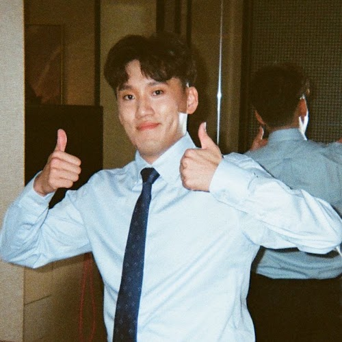
徐浩哲 Howard
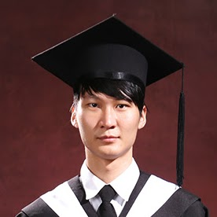
張功逸 Cary
Graduate Students
許安媺 Audrey

黃兆寅 Ian
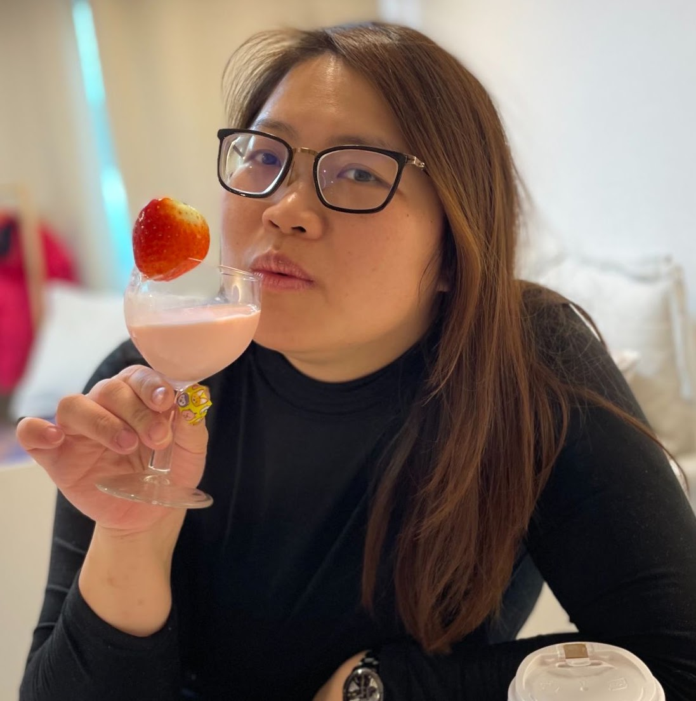
葉家伶
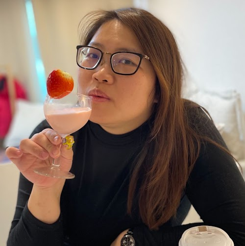
鄭雅庭
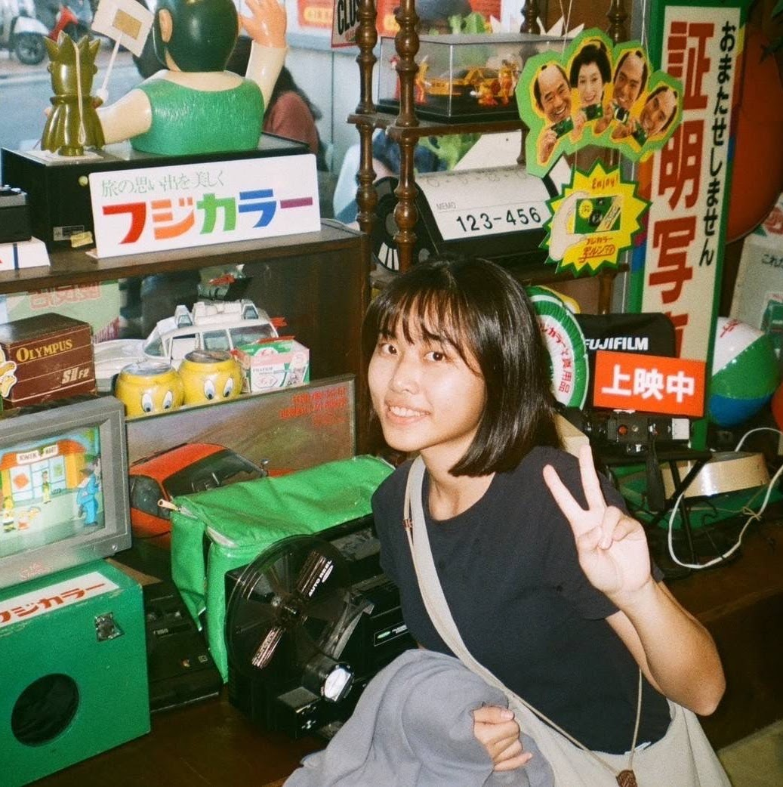
陳妤漩
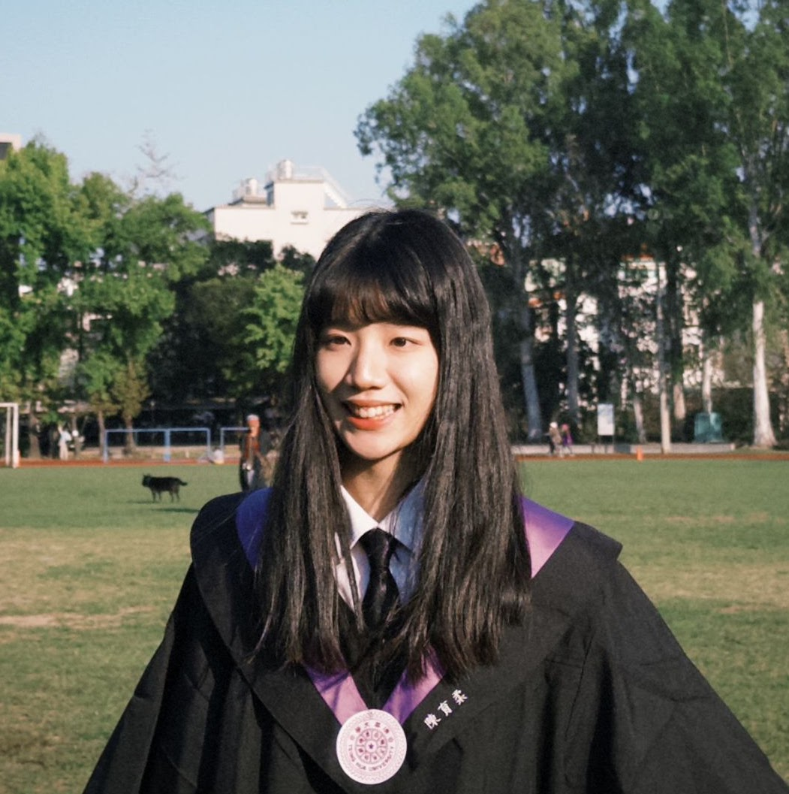
陳育柔
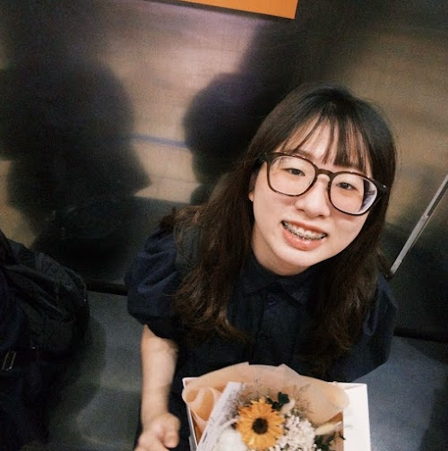
林佳誼
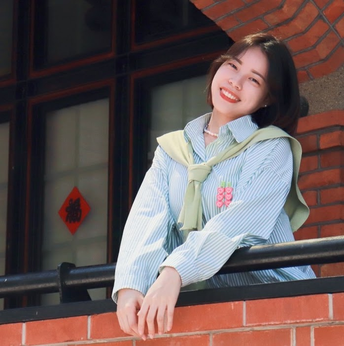
黃鈺涵
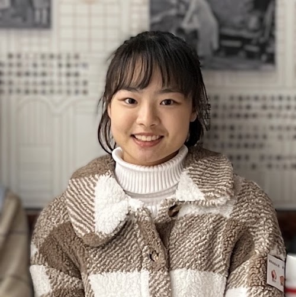
黃宇旋
吳梓瑄
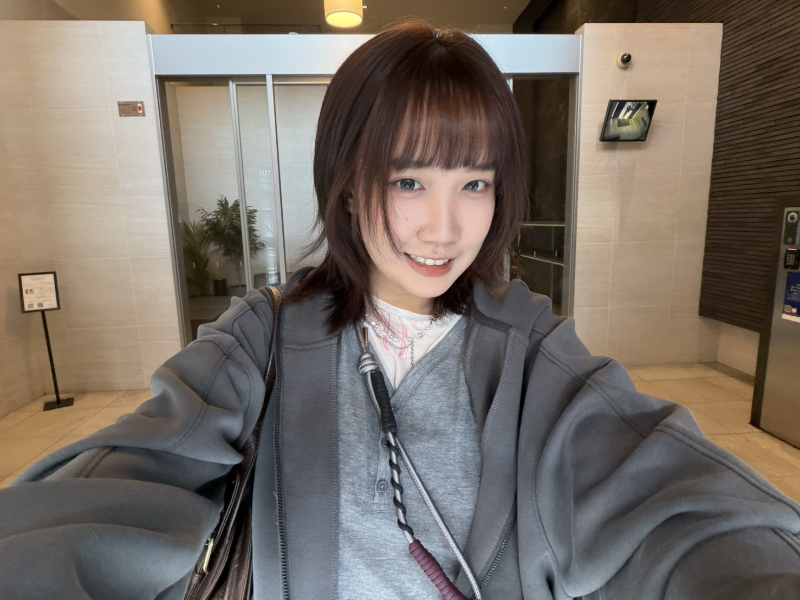
李亦晴
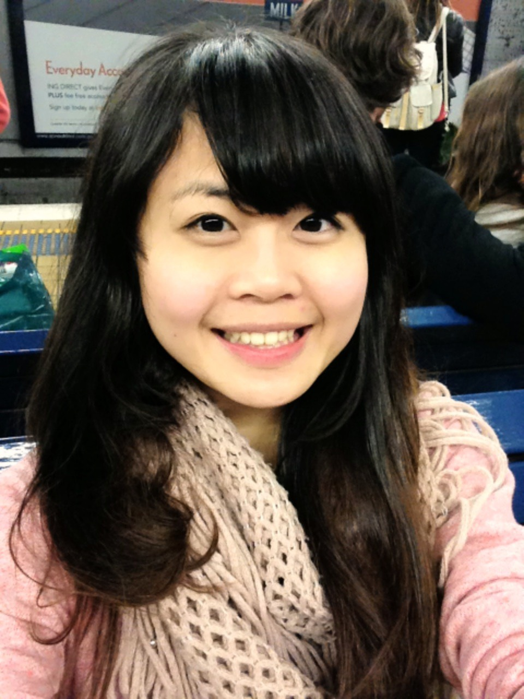
盧怡君
Undergraduate Students
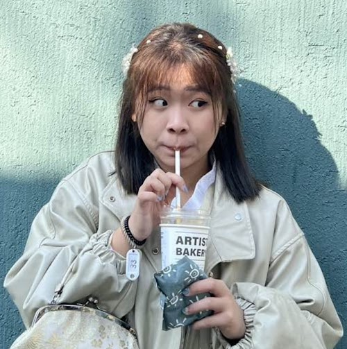
李奉燕
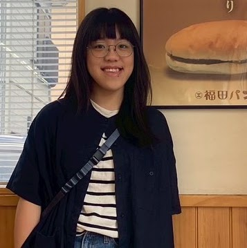
方姿予
李峻毅
邱奕高
黃紹愷
黃奕凱
Alumni
View alumni list
PhD
- 吳希彥, Hydra (PhD) — Mindfulness Training Associated With Resting-State Electroencephalograms Dynamics in Novice Practitioners via Mindful Breathing and Body-Scan
Postgraduate (Master's)
- 邱安緹 (2026) — 協作問題解決任務中不同社會角色之任務依賴性腦內連結差異
- 陳昱祺, Richie (Autumn 2023) — 結合Leadfield資訊之時空Transformer於適應性配置腦波源成像
- 陳昱如, YJ (Autumn 2023) — AI生成ASMR之神經生理研究：評估語言熟悉度對放鬆效率之影響
- 林子淳 (Autumn 2022) — 基於骨架辨識的兒童運動評估方法
- 許庭瑜, TY (Autumn 2022) — 任務難度對數位協同解題中腦間同步的調節影響
- 李冠毅, Ken (Autumn 2022) — 基於運動想像的腦機介面評估兒童發展性協調障礙
- 宮臨凡 (Autumn 2021) — 在有雜訊標籤的情況下利用靜息態腦電圖區分慢性偏頭痛患者和健康對照組
- 枋劭勳, Shane (Autumn 2021) — 基於注意力機制的深度學習模型發現大腦網路之方向性連接
- 張功逸, Cary (Autumn 2020) — 基於去雜訊自動編碼器U-Net架構使用混合獨立訊號自動去除EEG雜訊
- 彭柏勳, Harry (Autumn 2020) — 運用超掃描腦波技術探究雙人空間引導任務
- 徐浩哲, Howard (Autumn 2019) — 運用超掃描腦波探究雙人視覺競合互動
- 廖堉翔, Charlie (Autumn 2019) — 阻塞型睡眠呼吸中止症患者腦電波頻譜功率的動態變化
- 邱載峰, Eddy (Autumn 2018) — 結合虛擬實境與腦電波探究行人執行多重任務時的大腦動態
- 李哲宇, Denis (Autumn 2018) — 心率變異分析與穿戴式裝置於慢性偏頭痛患者之療效預測
- Victor D. Lopez
Undergraduate
- 蕭永千 (2026)
- 林芷頤 (2026)
- 張添恩 (2026)
- 賴璁毅 (2026)
- 黎承宣 (2026)
- 俞昊天 (2025)
- 余竑毅 (2025)
- 賀茂騏 (2025)
- 許安媺 (2024)
- 雲奕銘 (2024)
- 陳羿絜 (2022)
- 王芸若 (2022)
- 許瀞予 (2022)
- 鄭芝涵 (2022)
- 江詩媺 (Autumn 2021)
- 邱于庭 (Autumn 2021)
- 鍾牧樺 (Autumn 2021)
- 邱薇帆 (Autumn 2021)
- 黃穎恩 (Autumn 2021)
- 黃奕凱 (Autumn 2021)
- 彭珮筑 (2020)
- 許庭瑜 (2020)
- 林映彤 (特教系)
- 鄧皓軒 (特教系)
- 黃芊瑀 (Spring 2020)
- 葉智竣 (Spring 2020)
- 康致瑋 (Spring 2020)
- 林立衡 (Spring 2020)
- 陳昱豪 (Spring 2020)
- 王晧宇 (Spring 2019)
- 何寬宥 (Spring 2019)
- 蘇詣軒 (Spring 2019)
- 何寬猷 (Spring 2019)
- 蘇栢誼 (Spring 2019)
- 游俊宏 (Spring 2019)
- 林君瀚 (Spring 2019)
- 呂學承 (Spring 2019)
- 王柏凱 (Spring 2019)
- 張守中 (Spring 2018)
Staff
- 翁蔓嘉 (Administrative/Research Assistant)
- 許麗婷 (Administrative/Research Assistant)
- 吳冠慧 (Administrative/Research Assistant)
- 洪振杰 (Research Assistant, 2019–2020)
Lab Photos
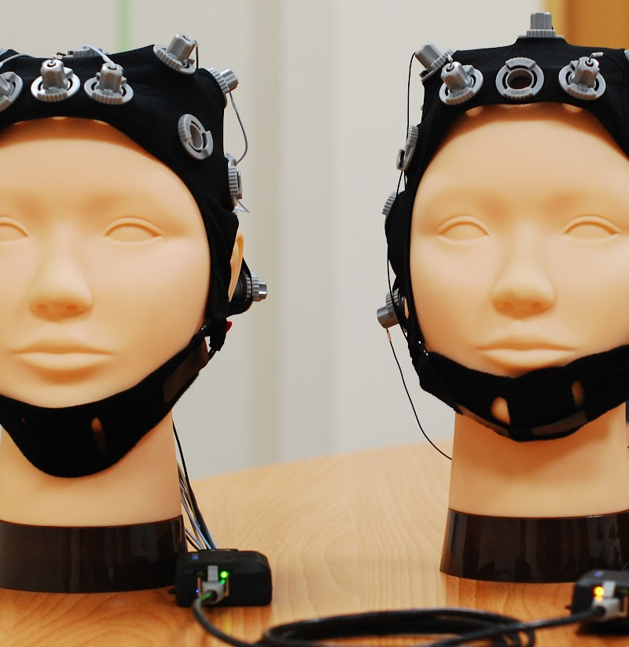
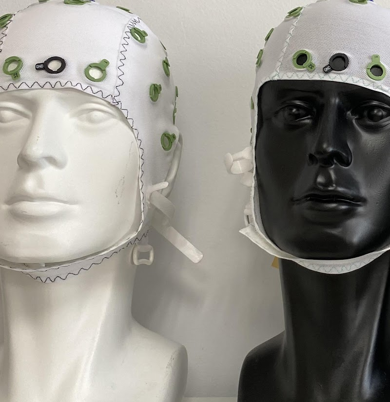